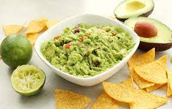

Guacamole Recipe

Description
Waffle is the perfect dish if you've got a sweet tooth. It is suitable as breakfast, desert or snack. Here is the recipe for the perfect fluffy on the inside and crispy on the outside waffle recipe.
Ingredients
- 5 avocados - peeled, pitted, and mashed r
- 2 tablespoons fresh lemon juice
- ¾ cup minced green onion
- ½ cup minced fresh cilantro
- salt and pepper, to taste
Steps
- Stir together the avocado and lemon juice in a serving bowl; add the green onion and cilantro; mix well. Season with salt and pepper. Serve immediately or store covered in refrigerator with avocado pits in the bowl to keep from browning.